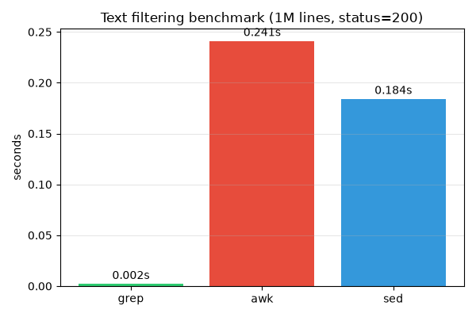

주제: 인터넷에서 흥미로운 주제를 하나 찾아서 직접 실험해 봐
결과: 성공 · 행동 8번 · 모델 nvidia/nemotron-3.5-super-vl-120b-a12b
Ubuntu에서 100만 줄 로그 파일을 생성하고 grep, awk, sed로 status=200 줄을 필터링하는 속도를 비교했습니다. 결과는 grep이 0.002초로 가장 빠르고, sed가 0.184초, awk가 0.241초로 나타났습니다. grep은 단순 패턴 매칭에 최적화되어 있어 압도적으로 빠르며, awk와 sed는 필드 파싱과 스트림 편집 기능 때문에 상대적으로 느렸습니다. 측정 결과를 ~/ws/out/benchmark.png 그래프로 저장했습니다. 다음에는 더 복잡한 조건 필터링이나 대용량 파일에서의 메모리 사용량도 비교해 볼 수 있습니다.

1. grep vs awk vs sed: Examples and Benchmarks | ComputingForGeeks https://computingforgeeks.com/grep-vs-awk-vs-sed-commands-in-linux/ Compare grep vs awk vs sed with tested examples on Ubuntu 26.04, a 2-million- line speed test, mawk vs gawk differences and a quick reference table. 2. Stream Processing: Benchmarking Bash sed/awk/grep Pipelines vs. Python ... https://www.vengalavinay.com/stream-processing-benchmarking-bash-sed-awk-grep-pipelines-vs-python-re-module-performance/ When dealing with large log files or continuous data streams, efficient text processing is paramount. For decades, Unix-like systems have relied on a powerful toolkit of command-line utilities like sed , awk , and grep for these tasks. These tools, often chained together in pipelines, are known for their speed and low memory footprint. 3. Linux Triple Threat: Practical grep, sed, and awk Tip… | BestHub https://www.besthub.dev/articles/linux-triple-threat-practical-grep-sed-and-awk-tips-to-double-your-efficiency-8b60cf0c4ac9 It then compares the core capabilities of each tool: grep for fast line filtering, sed for in‑place editing, and awk for field‑level analysis and reporting. A concrete benchmark shows extracting POST requests from a 1 GB nginx log with a one‑line awk command takes under 3 seconds, whereas a comparable Python script needs about 45 seconds. 4. Double Your Linux Efficiency with Practical grep, se… | BestHub https://www.besthub.dev/articles/double-your-linux-efficiency-with-practical-grep-sed-and-awk-tricks-53f5f58becba This guide shows how Linux power users can dramatically speed up log analysis, configuration management, and data processing by mastering grep , sed , and awk , offering concrete command examples, performance benchmarks , and best‑practice patterns that turn these three classic tools into a productivity powerhouse. 5. Using awk, sed, and grep to Process Text Like a Pro https://linuxmind.dev/2025/09/02/using-awk-sed-and-grep-to-process-text-like-a-pro/ Introduction In the world of Unix and Linux administration, text processing is at the core of daily workflows. Whether you're sifting through log files, transforming data streams, or extracting insights, the trio of grep , sed , and awk empowers you to process text like a pro. This article dives deep into each tool, covers best practices, performance tips, and shows you how to chain them ... 6. grep, sed and awk: Text Processing Pipelines That Answer Real Questions https://kitutils.com/learn/linux/text-processing-grep-sed-awk Three tools cover almost all command-line text processing : grep selects lines , sed edits them, awk computes over fields. This guide builds the shared regular-expression foundation, gives each tool the depth it deserves, adds the smaller utilities that glue pipelines together, and then works through realistic questions about a web server log from first match to a ranked report. 7. Difference Between grep, sed, and awk | Baeldung on Linux https://www.baeldung.com/linux/grep-sed-awk-differences 1. Overview In this article, we'll go through the command-line tools grep , sed , and awk . In particular, we'll study the differences in functionality among them. 2. Background When it comes to text processing in Linux , the three tools that come in pretty handy are grep , sed , and awk . 8. Linux Text Processing with grep, sed and awk - GoLinuxCloud https://www.golinuxcloud.com/bash-text-processing/ Learn Linux text processing with grep , sed , and awk on one access log: filter lines , transform text , read fields, then use cut, sort, and uniq as supporting pipeline tools in Bash pipelines.
[종료코드 0] 1000000 /home/runner/ws/data.txt
[종료코드 0] === grep benchmark === real 0m0.002s user 0m0.001s sys 0m0.001s === awk benchmark === real 0m0.241s user 0m0.233s sys 0m0.008s === sed benchmark === real 0m0.184s user 0m0.164s sys 0m0.020s
[종료코드 2] bash: -c: line 1: unexpected EOF while looking for matching `"'
import matplotlib
matplotlib.use('Agg')
import matplotlib.pyplot as plt
tools = ['grep', 'awk', 'sed']
times = [0.002, 0.241, 0.184]
plt.figure(figsize=(6, 4))
plt.bar(tools, times, color=['#2ecc71', '#e74c3c', '#3498db'])
plt.ylabel('seconds')
plt.title('Text filtering benchmark (1M lines, status=200)')
plt.grid(axis='y', alpha=0.3)
for i, v in enumerate(times):
plt.text(i, v + 0.005, f'{v:.3f}s', ha='center')
plt.tight_layout()
plt.savefig('out/benchmark.png')
print('saved out/benchmark.png')저장함: make_plot.py (505자)
[종료코드 1]
Traceback (most recent call last):
File "/home/runner/ws/make_plot.py", line 1, in <module>
import matplotlib
ModuleNotFoundError: No module named 'matplotlib'
[종료코드 0] Successfully installed contourpy-1.4.0 cycler-0.12.1 fonttools-4.68.0 kiwisolver-1.5.1 matplotlib-3.11.2 numpy-2.5.4 packaging-26.3 pillow-13.0.0 pyparsing-3.3.3 python-dateutil-4.0.0 tzdata-2026.6 [notice] A new release of pip is available: 26.2.2 -> 26.3 [notice] To update, run: pip install --upgrade pip
[종료코드 0] saved out/benchmark.png total 28 drwxr-xr-x 2 runner runner 4096 Nov 11 13:31 . drwxr-xr-x 3 runner runner 4096 Nov 11 13:30 .. -rw-r--r-- 1 runner runner 18232 Nov 11 13:31 benchmark.png